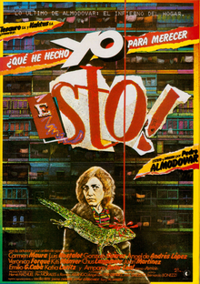

Pedro Almodóvar
1984
101 minutes
TITLE: What Have I Done To Deserve This TEXT PLACEHOLDER 248
More early Almodóvar. This is the first Almodóvar you saw on a big screen at a revival in Madison. This is a rambling weird mess of a tale about a harried housewife under financial pressure, and it falls into your "playing wrong with Barbies" theory of Almodóvar discussed elsewhere. The housewife is pilled out just trying to get through her days. Her husband is scuzzy and unfaithful and has weird Nazi connections. One of her sons is a drug dealer who is saving up to become a farmer. Her other son is a twelve year old hustler who is prostituting himself out to men, which she argues with him about but half-heartedly gives up on trying to stop. At some point she runs up a debt with a dentist and literally sells the younger son to the pedophile dentist, who drools ghoulishly over the child. Somehow this is less controversial than Kika from Section 242.
You had a weird dentist when you were a kid as well, though not that weird. He was suspiciously spacy, but as far as you know he was not a pedophile. Your mother went to the same dentist, and he had a disturbing habit of getting the two of you confused. You do have similar names, but at the time she was half your size and had thirty years on you. He once greeted her in his chair by asking her, "So, [your name goes here], how is school?" She had to stop him to make sure that he knew which member of your family he was talking to and what he was about to do to her.
He did something similarly disturbing to you when he had your mouth numb and proceeded to ask you, "So, [your name goes here], are you still driving around that chicken truck?" This greatly alarmed you and you asked for clarification. You were in engineering school at the time, but he was under the impression for some reason that you had a gig driving frozen poultry around in a gigantic truck shaped like a chicken. You could not for the life of you figure out what gave him that impression. Once again you double-checked with him to determine if he knew what precise dental procedure you were having done that day, which he seemed to find slightly insulting. Thankfully that was all in order, but it definitely rattled you and made you a little afraid to go back to him in the future.
Time to choose something different: